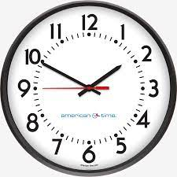

Clock Club

Introduction
Clock Club is a community of people who have an interests with clocks, their manufacturing, and their history.
It is open to people who have just gotten and interest into clocks and have zero knowledge with anything to do with clocks.
But we will still review and be on a basic, easy to understand, level at the start and will work our way up to the more complex
and specific clocks with their history, certain manufacturing, and their overall story.
So again, we will start out basic and work our way up to the more complex and advanced and specific clocks,
so it is not required to already have information and knowledge about clocks.
It is recommended to have enough free time to be able to go to multiple meetings, of which the schedule will be provided in the link below.
To view the schedule, click here
Thank you for participating in the clock club, and hope to see you at meetings!
If you are having any problems, whether it involves your schedule, interest, or lack of interest, you can always email me at my email address!